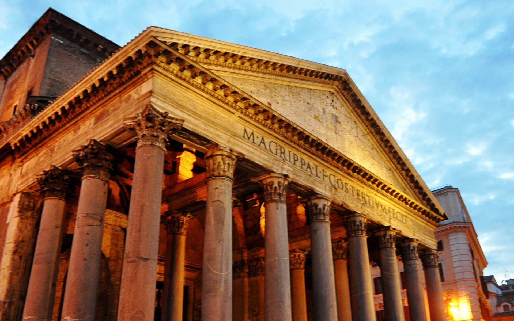

1.Colosseum
This huge amphitheater, the largest of its kind ever built by the Roman Empire and the largest of their constructions to survive, remained a model for sports facilities right up to modern times. Built by Vespasian in 72 CE and enlarged by the addition of a fourth story by his son, Titus, it was a venue for public spectacles and shows - even mock sea battles.
A wooden floor that was 83 by 48 meters covered two additional underground stories with tunnels, rooms, cells, and passages that provided space for gladiators, workers, wild animals, and storage.
Today, the structure stands in stark contrast to the modern development that surrounds it and is a prominent reminder of ancient times and the extensive history of Rome.
2. Leaning Tower of Pisa

The Leaning Tower of Pisa (La Torre Pendente) is just one of many attractions in the city of Pisa, one whose world fame comes not from the considerable elegance of its design, but from a flaw. Work began on the tower in the 1100s, and the sinking, which led to the lean, began by the time the tower reached the third story.
Leaning more and more over the centuries, before restoration work in the 1990s, it was predicted to topple over by the year 2000. Today, visitors can climb up the stairs of the tower for a fabulous view over the city.
The Leaning Tower stands on the Piazza dei Miracoli, a setting it shares with the beautiful Romanesque Cathedral of Santa Maria Assunta and a round freestanding baptistery. Each of these features outstanding works of medieval stone carving.
3. Trevi Fountain, Rome

Immortalized in films from La Dolce Vita to Roman Holiday, The Lizzie McGuire Movie and Three Coins in a Fountain, Trevi Fountain is a beloved icon that's a traditional stop on any visit to Rome. A coin tossed over the left shoulder (with the right hand) is supposed to guarantee a return trip.
The origins of the tradition are not clear, but the fountain itself began as a public water source, connected to an aqueduct built in the first century BC. By 1629, Pope Urban VIII wanted a more attractive fountain and asked Bernini to design the revisions. When the Pope died, so did Bernini's plan, and the present design of Neptune, horses, and shells was completed in 1751 by Nicolò Salvi.
4. Milan Duomo

Milan's magnificent Cathedral of Santa Maria Nascente, "Il Duomo" to the locals, is one of the world's largest churches and probably the best example anywhere of the flamboyant Gothic style. Its statue-studded façade (the exterior of the cathedral has a grand total of 2,245 marble statues) and the 135 carved stone pinnacles that crown its roof make quite a first impression, which is reinforced as you step inside.
Fifty-two immense pillars support the soaring ceiling of the nave, and its walls are decorated by the world's largest stained-glass windows. Highlights in the nave are the tomb of Gian Giacomo Medici and a 12th-century bronze candelabrum.
Below the high altar is the crypt and the octagonal chapel with the gold reliquary of San Carlo Borromeo. Under Piazza del Duomo, and reached by stairs near the entrance, are the foundations of a fourth-century baptistery and basilica.
An elevator will take you partway to the roof, where you can walk at a dizzying height among the carved stone pinnacles.
5. Rialto Bridge, Venice

Standing on more than 10,000 wooden pilings – the originals placed at the time of its construction in 1588 – the stone Rialto Bridge is both an icon of Venice and an essential link between two sides of the city. Until the Accademia Bridge was built in 1854 it was the only way to cross the Grand Canal on foot. It is still the busiest.
Its architect won the commission to design the bridge over such stiff competition as Michelangelo and Palladio, proposing a bridge with three walkways. The outer two are perpetually crowded with tourists catching views of the Grand Canal and its steady boat traffic, while the wider central walk is lined by shops catering to visitors.
Venetians do their shopping at the other side of the Rialto Bridge, in the bustling food market in San Polo. Along that side of the bridge, the canal is lined by restaurants, and you'll find smaller – and better – choices by following the narrow streets into the neighborhood of small shops and artisans.
6. Florence Duomo Santa Maria del Fiore

Regarded as one of the finest cathedrals in the world, the Duomo Santa Maria del Fiore, or the Cathedral of Santa Maria del Fiore, dominates the Florence skyline. The cathedral was built between the 13th and 15th centuries, with the most famous piece being the extraordinary dome, completed by Filippo Brunelleschi in 1434.
The cathedral's bell tower stands close beside the cathedral in Piazza del Duomo, covered in the same patterned marble typical of Tuscan Romanesque architecture.
Designed by Giotto, the campanile stands 82 meters tall, and you can climb the 414 steps up to a viewing platform with fantastic views of the city and the dome.
pposite the Duomo is a magnificent baptistery, famed for its bronze paneled doors by Lorenzo Ghiberti. To see the original, exquisitely crafted panels, which have been replaced by exact replicas to protect the originals from weathering, visit the Museo dell'Opera del Duomo, the cathedral museum.
7. The Grand Canal in Venice

A gondola ride through the canals of Venice is a tradition that travelers have been enjoying for centuries. Venice is a city of islands, and the canals have long been the city's main streets, connected by a labyrinth of narrow passageways.
The Grand Canal is the largest and most famous of these waterways, cutting a wide S-shaped route through the city. Along its sides are the grandest of the palaces once owned by the wealthiest and most powerful families of the Venetian Republic. The best way to see many of the grand palaces, whose fronts face the water, is from a Vaporetto ride along the Grand Canal.
Be sure your gondola ride - and your sightseeing explorations on foot - include some of the more atmospheric smaller canals, lined by old buildings that have remained relatively unchanged for hundreds of years.
8. Pantheon
The Pantheon, an exceptionally well preserved remnant from Roman times, reveals the incredible architectural achievements of the Roman Empire.
The precise proportions of the building, dedicated to the planetary gods, with the height equal to the diameter, and a single beam of light entering the room from the top of the dome, were intended to represent the firmament and the sun.
Disused after early Christian kings forbade use of a pagan temple as a church, it was later consecrated by the Pope in 609 CE. Italian Kings, the Renaissance painter Raphael, and other great Italians are buried in the Pantheon.
9. Verona's Roman Arena and Historic Center

One of the largest and best-preserved Roman amphitheaters still in existence, Arena di Verona is the centerpiece of the centro storico – the town's historic center. It is one of several features from ancient times, when Verona was an important Roman city. In naming it a World Heritage Site, UNESCO notes that "Verona has preserved a remarkable number of monuments from antiquity, the medieval and Renaissance periods."
Verona continued to thrive under the rule of the Scaliger family in the 13th and 14th centuries and as part of the Republic of Venice from the 15th to 18th centuries. The imposing Castelvecchio was both palace and defensive fortress (now an outstanding art museum), overlooking the beautiful castellated Ponte Scaligero, a 14th-century bridge.
Throughout the old center are Romanesque churches, regal buildings with characteristic Venetian Gothic windows, and stone gates that are more reminders of its Roman origins. And, of course, in a courtyard close to Piazza del Erbe's daily market, you'll find Juliet's Balcony (which was actually built in the 1930s as a tourist attraction).
10. St. Mark's Basilica

One of the most important tourist sites in Venice is St. Mark's Basilica, whose ornate Byzantine-inspired façade and domes overlook Piazza San Marco, St. Mark's Square. The building itself is a work of art, with a mix of architectural styles heavily influenced by the Byzantine Empire, showing Venice's long trade connections to the East.
Highlights of the vast interior are the brilliant mosaics that line its domes and vaults, and the high altar covered in gold and jewels. The Treasury contains more glittering gold and jewels.
For an unforgettable view of St. Mark's Square, the tall campanile and the clock tower, climb to the porch to stand among the iconic horses.
Next to the basilica is the Doge's Palace, also filled with priceless masterpieces of Italian art.